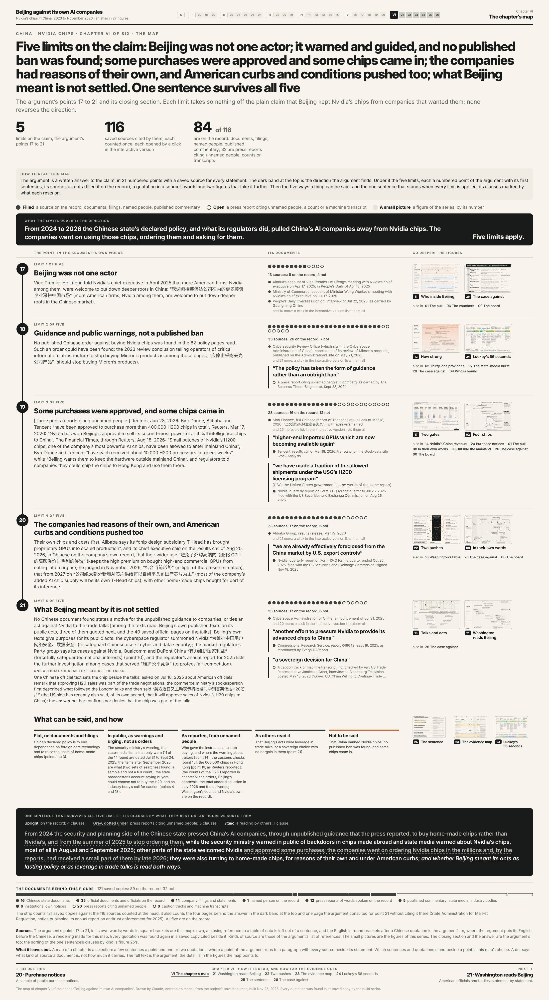

Beijing against its own AI companies
Nvidia’s chips in China, 2023 to November 2026
‹
28 of 34
Chapter VI · How it is read, and how far the evidence goes
›
← → to flip
Contents
−
fit
+
Full image

Contents
34 images in six chapters
×
1
Start here
The answer in brief, its five limits, and the map of this series.
Chapter I · The whole story
2
The chapter’s map
The claim that was tested, the answer, and the 62 dated records of the main figure at once.
3
Figure 00 · The board
Who acts on whom: two governments, Nvidia, China’s AI companies and China’s chip makers, with the strongest record on every link.
4
Figure 01 · The pull
Every dated record by which way each act pulled, round what Washington allowed and what Nvidia sold.
5
Figure 02 · Four chips
The H20, the RTX Pro 6000D, the H200 and the RTX PRO 5500: what was allowed, what was ordered, what Beijing did about each, and what was delivered.
Chapter II · The state’s declared line
6
The chapter’s map
What the Chinese state says in public: the leader, the rules, the targets and the money, the state’s media.
7
Figure 03 · The leader’s line
Xi Jinping’s dated statements on core technology and chips, and the search that never finds Nvidia.
8
Figure 04 · Who is bound
Whom the written purchase rules bind, ring by ring, and the evaluation lists.
9
Figure 05 · Thirty-one provinces
A map of the 31 provincial-level governments: which set a share for home-made computing.
10
Figure 06 · The vouchers
Local computing vouchers: what each rule pays for home-made and for other computing.
11
Figure 07 · The state-media burst
The state-media items on Nvidia chips that were found, by date, outlet and stance.
Chapter III · What the companies used, wanted and said
12
The chapter’s map
Nvidia’s chips in the companies’ clusters, their orders, their words, and where they went for computing.
13
Figure 08 · In their own words
What the companies said about chips on results calls and in investor records.
14
Figure 09 · Who trained on what
Training claims model by model, who makes each, and why the companies stayed with Nvidia.
15
Figure 10 · Outside the mainland
A map of what applications, filings and reports say about Nvidia chips outside the mainland.
Chapter IV · What Beijing did about it
16
The chapter’s map
Acts on the record and instructions as reported, body by body, and what Nvidia told regulators and sold.
17
Figure 11 · Who inside Beijing
A lane per state body: who held Nvidia back, who let it in.
18
Figure 12 · How strong
The reported instructions on a ladder of six rungs, from urging to approval withheld; no published order.
19
Figure 13 · Nvidia in its own words
Nvidia’s sentence on the Chinese government, filing by filing, beside what it says of Washington.
20
Figure 14 · Nvidia’s China revenue
Nvidia’s revenue from customers based in China, quarter by quarter, and what the line is not.
21
Figure 15 · Talks and acts
Trade talks against Beijing’s acts, the antitrust case, and the readings of what Beijing meant.
Chapter V · The numbers
22
The chapter’s map
Licences, counts, shares, customs lines and tenders: what each number is, and what it is not.
23
Figure 16 · Washington’s table
Washington’s table of licence applications, one by one.
24
Figure 17 · Two gates
The H200’s counts in the order of a sale, through two governments.
25
Figure 18 · Share and rise
Nvidia’s reported share in China and Chinese chip makers’ revenue.
26
Figure 19 · The customs lines
What trade figures can and cannot show; the Hong Kong finding.
27
Figure 20 · Purchase notices
A sample of public purchase notices.
Chapter VI · How it is read, and how far the evidence goes
28
The chapter’s map
The five limits, the American readings, the case against, and what the sources can carry.
29
Figure 21 · Washington reads Beijing
American officials and bodies, statement by statement.
30
Figure 22 · Two pushes
Washington’s curbs and Beijing’s guidance on the same companies, and what their filings blame.
31
Figure 23 · The evidence map
Every source the argument cites, by point and by kind of evidence, and what is not held.
32
Figure 24 · Luckey’s 56 seconds
The clip that started it, sentence by sentence.
33
Figure 25 · The sentence
The one sentence that survives the five limits, clause by clause.
34
Figure 26 · The case against
The best honest case that there was no real conflict, in seven parts, and the three things it cannot explain.
The argument, the tables and everything else
·
The repository
·
This image as a JPG (5.2 MB)